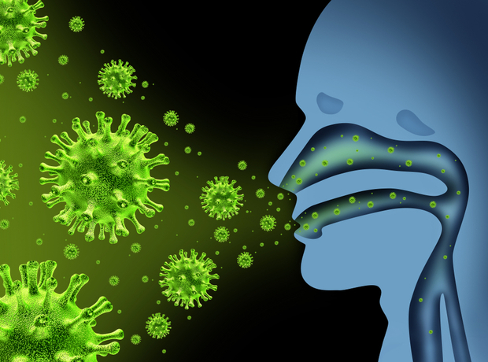
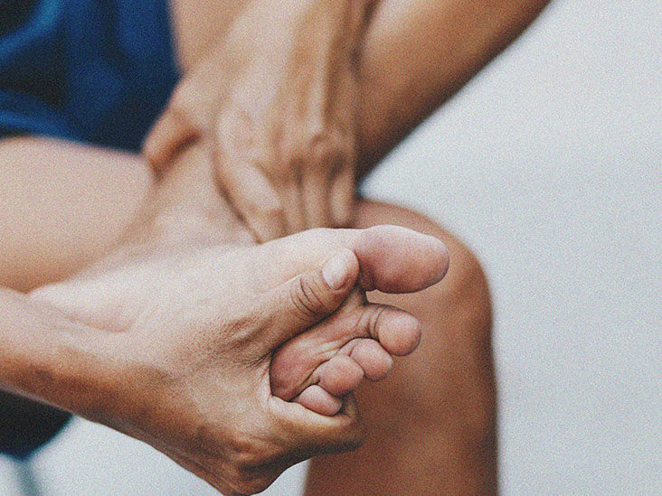
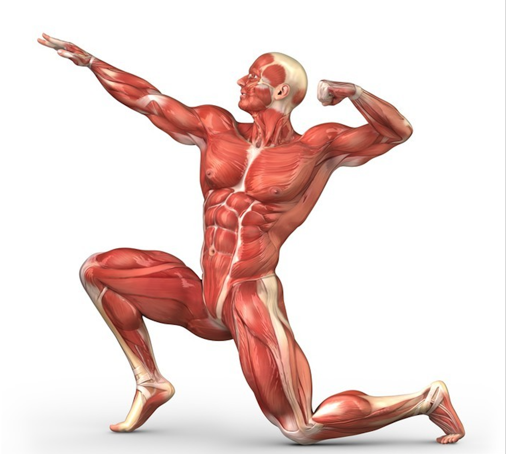

Matters
MattersHEALTH
Health through Fitness
In today's modern world, life is so happening and fast paced, everyone including all age groups are busy on their day-to-day routines. Most people are so bound to their schedule that they have no time to think about their health. It's our own responsibility to concern about one's own health and manage the balance of life where health is considered to be important.
Why focusing on health is important?
WHO Says:
In 2019, the top 10 causes of death accounted for 55% of the 55.4 million deaths worldwide.
The top global causes of death, in order of total number of lives lost, are associated with three broad topics: cardiovascular (ischaemic heart disease, stroke), respiratory (chronic obstructive pulmonary disease, lower respiratory infections) and neonatal conditions – which include birth asphyxia and birth trauma, neonatal sepsis and infections, and preterm birth complications.
Causes of death can be grouped into three categories: communicable (infectious and parasitic diseases and maternal, perinatal and nutritional conditions), noncommunicable (chronic) and injuries.
Most of these causes can be defended by simply taking care of few things in our daily life which will contribute to better health.
Some interesting facts on health
- Optimism may help you live longer
- An infected person is contagious for up to seven days after flu symptoms appear
- Bananas can help improve your mood
- Cold temperature can be good for your health
- You can physically see high cholesterol
- Your feet can give an early warning about serious health problems
- More than half your bones are located in your hands and feet
- The strongest muscle in your body is ….
- Companionship is good for the heart
- Drink something hot to cool down
- 1. Optimism may help you live longer
- Can seeing the glass half full help you live longer? Studies have found that there is a correlation between increasing levels of optimism with decreasing levels of death from cancer, disease, infection and stroke. This is particularly true for cases of cardiovascular disease. Those who had the highest levels of optimism had an almost 40% lower risk of heart disease.
- 2. An infected person is contagious for up to seven days after flu symptoms appear
- This is why the flu is able to spread so quickly and easily in the workplace or home. The flu can show up any time without warning. Flu symptoms can last between five to 10 days before full recovery. In Canada alone, there are approximately 12,200 hospitalizations and 3,500 deaths due to the flu every year. Continue reading to find out more about the flu. Consider getting the flu shot this year or have a flu clinic at your workplace.
- 3. Bananas can help improve your mood
- A banana has approximately 30% of your daily recommended intake of vitamin B6. Vitamin B6 helps the brain produce serotonin, which is considered a mood stabilizer. Serotonin impacts your motor skills and emotions. It is also the chemical that helps you sleep and digest food. Eating a banana can help relieve depression and anxiety by stimulating the serotonin levels in your body.
- 4. Cold temperature can be good for your health
- If you live in Canada, you know all about cold weather. But did you know that colder temperatures can benefit your health? Colder temperatures may help reduce allergies and inflammation and research has shown that it can help you think more clearly and perform daily tasks better. The cold can also help lower the risk of disease; mosquitoes that carry diseases such as Zika, West Nile virus and malaria are not around during the winter season.
- 5. You can physically see high cholesterol
- It is possible to see signs on your body that you may have high cholesterol. Xanthelasmata, or xanthelasma, are cholesterol-filled bumps that form under your skin. It can be an indicator of possible heart disease. The lesions can be found all over the body and tend to appear on the skin of older people with diabetes or other heart ailments.
- 6. Your feet can give an early warning about serious health problems
- People can develop serious foot problems as they age, which puts their health, independence and well-being at risk. Your feet can give an early warning about serious health problems such as diabetes, nerve damage, poor blood circulation and arthritis. Various Health Care's foot care nurses are specially trained in the provision of elderly foot care, diabetic foot care, and will provide treatment, information and support that assist in the promotion of healthy feet and healthy living.
- 7. More than half your bones are located in your hands and feet
- We are born with approximately 300 bones and cartilage which eventually fuse together by the time we reach adulthood. The adult human body consists of 206 bones. Of these bones, 106 of them are located in our hands and feet. Bones in the arms are among the most commonly broken bones and account for almost half of all adults’ bone injuries.
- 8. The strongest muscle in your body is ….
- Our muscle strength can be measured in different ways. If you are referring to the muscle that can exert the most force, then your calf muscle, the soleus, would be the winner. However, if you want to find the muscle that can exert the most pressure, then the jaw muscle, or the masseter, would be the strongest. The human jaw can close teeth with a force as great as 200 pounds, or 890 newtons!
- 9. Companionship is good for the heart
- Having quality connections and social supports can increase happiness and longevity. Blue Zones, regions of the world where a higher than usual number of people live much longer than the global average, shows that people who are socially active and integrated into their communities live longer lives. You may have a senior in your life that is experiencing social and physical isolation. Seniors for Seniors will send senior companions to go check up on the senior, buy groceries and drop them off, take them to run errands, drive them to their medical appointments, or just drop by for a friendly visit.
- 10. Drink something hot to cool down
- Conventional wisdom may tell you that if you are hot, drinking something cold will cool down your body. However, research has shown that on a hot day, drinking a hot beverage may help your body stay cool. The reason being that when you drink a hot drink, your body produces sweat to cool down your body temperature. Initially you may be adding heat by drinking the hot liquid, but the amount of sweat that your body produces to cool down more than makes up for the added heat from the liquid. The increased perspiration is key; when the sweat evaporates from your skin, it is able to cool down your body temperature.





Our website Wellness Matters is created with the aim of providing the knowledge of Health related concerns, causes and remedies. It resources various ways to stay fit through physical actvities as well as proper food intake. An individual can choose preferred way according to their situation and convenience.